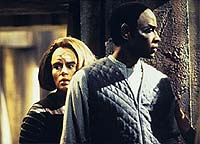
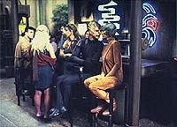
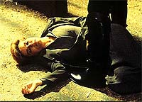
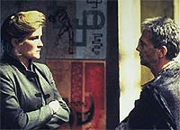
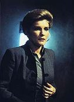

|
MANCHETE
DO EPISDIO
Histria tocante e bem executada nasce
da natureza "esquizofrnica" da srie
Episdio
anterior | Prximo
episdio
Sinopse:
Data Estelar: desconhecida.
procura do precioso tellerium necessrio para abastecer a nave,
Janeway, Tuvok, Torres e Neelix se transportam para uma cidade
Alsauriana ocupada pelos hostis Mokras, soldados que estabeleceram
um severo regime militar na regio.
Alertados sobre a presena dos tripulantes da Voyager, soldados os
abordam no mercado local, confrontando-os. Tuvok e B'Elanna so
capturados e levados para interrogatrio. J a capit, leva um
tiro e cai inconsciente na rua, resgatada em seguida por Caylem, um
excntrico nativo que acredita que Janeway sua filha, h muito
perdida.
Na Voyager, Chakotay contacta Augris, o magistrado dos Mokras, a fim
de recuperar os tripulantes perdidos, mas quando seus esforos
falham, comea a formular um plano de resgate.
 Na casa de Caylem,
Janeway descobre que Torres e Tuvok foram levados para a priso
impenetrvel dos Mokras. Esperando encontrar sua esposa
desaparecida, Caylem pede capit para acompanh-la em sua
busca. Ela recusa, mas nesse momento soldados chegam, procurando por
ela. Os dois conseguem fugir segundos antes de os militares entrarem
no local.
Janeway e Caylem se aproximam do lder da resistncia que forneceu
o tellerium, que concorda em ajud-los a conseguir armas para eles
libertarem os tripulantes. Mas quando a capit descobre que a troca
para obter armas uma armadilha, tem de apelar para sua artimanha
feminina a fim de se livrar de dois guardas que protegiam os tneis
de acesso priso.
Depois que ela e Caylem roubam armas, eles conseguem entrar na
instalao. Enquanto isso, a Voyager atacada pelos Mokras, que
ordenam sua retirada imediata.
 Janeway
consegue encontrar Tuvok e Torres, mas permanece no lugar para
ajudar Caylem encontrar sua esposa. No entanto, Augris chega com
seus soldados e revela que tanto a filha como a esposa --membros da
resistncia-- esto mortas. Caylem ento esfaqueia Augris e, em
seguida, leva um tiro.
Enquanto ele agoniza, Janeway assume o papel de filha e o assegura
de que ela e sua me o perdoam por seu medo em juntar-se resistncia
anos antes. Segundos depois, Paris chega e todo o grupo avanado
transportado de volta Voyager.
Comentrios:
"Resistance"
tem um roteiro de carga e consistncia e foi ajudado tambm por um
bom elenco convidado. Joey Grey (Caylem) atuou admiravelmente em
dupla com Kate Mulgrew, o que resultou em um dos episdios mais
comoventes de Voyager. Augris, interpretado por Alan Scarfe,
tambm foi um personagem forte. Ele ilustra bem poder e frieza e
sua interao com Caylem tambm foi digna de emoo. Enfim, a
qumica foi muito boa.
 Infelizmente, o
episdio tambm reflete a inconsistncia da srie. A rigor,
Janeway sempre foi uma defensora extrema da Primeira Diretriz.
Deixou de negociar uma tecnologia que poderia levar a Voyager de
volta para casa (em "Prime Factors"),
s para respeitar a poltica oficial local. Aqui, somos pegos de
surpresa por uma negociao entre a prpria capit, liderando um
grupo avanado, com terroristas de uma civilizao aliengena,
agindo contra os interesses do governo local!
Esse tipo de "esquizofrenia" seria uma das maiores fontes
de crticas srie. Mas, desconsiderando esse fator (que no
pequeno, diga-se de passagem), o episdio mantm-se como uma
tocante e bem executada histria.
 Janeway
contribuiu bastante para o bom rendimento do episdio. estranho
v-la aceitar esse relacionamento com Caylem, dadas as circunstncias.
Ela uma capit da Frota, logo espera-se uma postura mais
materna. Contudo, cultiva um carinho genuno por esse estranho que
a trata como a filha h muito perdida. Pde-se ver o lado humano
de Kathryn Janeway: ela ri, chora, demonstra afeto.
No se pode esquecer de mencionar a cena em que ela usa de sua
feminilidade para passar os guardas na entrada da priso Mokra.
Duvido que a Academia da Frota ensine esse tipo de ttica a seus
alunos, o que mostra a grande habilidade de improviso de Janeway.
Seus mtodos no-convencionais a destacaro dos demais capites.
 Sem desmerecer as
atuaes, que foram excelentes, s no fica claro por que a
capit estava no planeta. Em uma situao claramente tensa, acho
que seria papel do primeiro-oficial levar a misso adiante. Mas
Chakotay apenas ficou na Voyager, supervisionando reparos e, mais
tarde, planejando o resgate dos colegas.
Mas o que predomina mesmo um grande roteiro, que no precisou de
efeitos especiais cinematogrficos para entreter e tornar-se
atraente ao pblico. O episdio foi fechado com chave de ouro na
cena em que Caylem morre nos braos da capit. Tambm poderosa
a sequncia final, quando Janeway est em seu gabinete segurando o
colar dado pelo "pai", um smbolo com profundo
significado.
Citaes:
Chakotay - "Sounds like a
challenge for you, Mr. Kim."
("Soa como um desafio para voc, Sr. Kim")
Janeway - "Maybe we'll have to try a different strategy."
("Talvez tenhamos que tentar uma estratgia diferente.")
Janeway - "Nobody will see us back here... it's dark,
private."
("Ningum nos ver aqui... escuro, particular.")
Trivia:
 Em entrevista no dia 15/11/1995, o diretor Winrich Kolbe disse:
"Foi uma pea de desfile para Kate [Janeway] e Joel Grey [Caylem].
Eles se ligaram imediatamente e tiveram um relacionamento
maravilhoso tanto na tela como fora. Como diretor, apenas sentei l
e disse, 'Vocs querem fazer isso de novo? Tudo bem, timo. Me
avisem quando quiserem que eu corte e cole'. Eu estava admirado.
Eles eram dois talentos se divertindo e isso repercutiu. Foi
provavelmente a melhor atuao em que estive envolvido em Jornada."
Em entrevista no dia 15/11/1995, o diretor Winrich Kolbe disse:
"Foi uma pea de desfile para Kate [Janeway] e Joel Grey [Caylem].
Eles se ligaram imediatamente e tiveram um relacionamento
maravilhoso tanto na tela como fora. Como diretor, apenas sentei l
e disse, 'Vocs querem fazer isso de novo? Tudo bem, timo. Me
avisem quando quiserem que eu corte e cole'. Eu estava admirado.
Eles eram dois talentos se divertindo e isso repercutiu. Foi
provavelmente a melhor atuao em que estive envolvido em Jornada."
Ficha
tcnica:
Histria de Michael Jan Friedman
& Kevin J. Ryan
Roteiro de Lisa Klink
Direo de Winrich Kolbe
Exibido em 27/11/1995
Produo: 028
Elenco:
Kate Mulgrew como
Kathryn Janeway
Robert Beltran como Chakotay
Roxann Biggs-Dawson como B'Elanna Torres
Robert Duncan McNeill como Tom Paris
Jennifer Lien como Kes
Ethan Phillips como Neelix
Robert Picardo como Doutor
Tim Russ como Tuvok
Garrett Wang como Harry Kim
Elenco convidado:
Joel Gray como Caylem
Alan Scarfe como Augris
Tom Todoroff como Darod
Glenn Morshower como Guarda 1
Episdio
anterior | Prximo
episdio
|